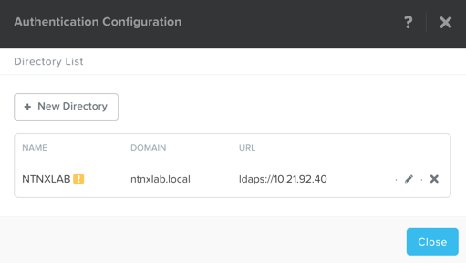

Self-Service Portal¶
Overview¶
Estimated time to complete: 45 Minutes
In this exercise you will use Prism Central to configure Self Service Portal (SSP) from Prism Element, and create multiple projects for different groups of users. This lab should be completed BEFORE the Calm lab.
Setup Authentication and Role Mapping in Prism Central¶
Note
If you have already configured Authentication in Prism Central, skip this section.
In Prism Central, click > Authentication
Click + New Directory
Fill out the following fields and click Save:
Directory Type - Active Directory
Name - NTNXLAB
Domain - ntnxlab.local
Directory URL - ldaps://10.21.XX.40
Service Account Name - administrator@ntnxlab.local
Service Account Password - nutanix/4u

Click on the yellow ! next to NTNXLAB

Click on the Click Here to go to the Role Mapping screen
Click + New Mapping
Fill out the following fields and click Save:
Directory - NTNXLAB
LDAP Type - user
Role - Cluster Admin
Values - administrator

Close the Role Mapping and Authentication windows
Configure Self Service Portal¶
Note
If you have already configured SSP in Prism Central, skip this section.
We will use the following user information
| Group | Usernames | Password |
| SSP Admins | adminuser01-25 | nutanix/4u |
| SSP Developers | devuser01-25 | nutanix/4u |
| SSP Power Users | poweruser01-25 | nutanix/4u |
| SSP Basic Users | basicuser01-25 | nutanix/4u |
In Prism Central, click > Self-Service Admin Management.

Fill out the following fields and click Next:
Domain - ntnxlab.local
Username - administrator@ntnxlab.local
Password - nutanix/4u
Click +Add Admins
Enter SSP Admins, and Click Save
Click Save
Create Projects¶
In this section of the exercise we will create 3 Projects. Each project will have permissions set for different Active Directory groups.
In Prism Central, click Explore
Click Projects
Create Developers Project¶
Click Create Project
Fill out the following fields:
- Project Name - Developers
- Description - SSP Developers
- AHV Cluster - Assigned HPOC
Click +User under Users, Groups, and Roles
Fill out the following fields and click Save:
NAME - SSP Developers
ROLE - Developer
Under Network check the appropriate network, and make it default.
Check the box for Quotas
Fill out the following fields:
- VCPUS - 10 VCPUs
- Storage - 200 GiB
- Memory - 40 GiB
Confirm everything is filled out, and click Save
Create Power Users Project¶
Click Create Project
Fill out the following fields:
- Project Name - Power Users
- Description - SSP Power Users
- AHV Cluster - Assigned HPOC
Click +User under Users, Groups, and Roles
Fill out the following fields and click Save:
- NAME - SSP Power Users
- ROLE - Developer
Under Network check the appropriate network, and make it default.
Check the box for Quotas
Fill out the following fields:
- VCPUS - 10 VCPUs
- Storage - 200 GiB
- Memory - 40 GiB
Confirm everything is filled out, and click Save
Create Calm Project¶
Click Create Project
Fill out the following fields:
- Project Name - Calm
- Description - Calm
- AHV Cluster - Assigned HPOC
Click +User under Users, Groups, and Roles
Fill out the following fields and click Save:
- NAME - SSP Admins
- ROLE - Project Admin
Fill out the following fields and click Save:
- NAME - SSP Developers
- ROLE - Developer
Fill out the following fields and click Save:
- NAME - SSP Power Users
- ROLE - Consumer
Fill out the following fields and click Save:
- NAME - SSP Basic Users
- ROLE - Operator
Under Network check the appropriate network, and make it default.
Confirm everything is filled out, and click Save
Use Self Service Portal¶
In this exercise we will login into Prism Central as different users from different AD groups. Then we can compare what we see in SSP, and what we can do.
Lets Start by logging out of Prism Central
Use Self Service Portal as a SSP Admin¶
Log into Prism Central with the following credentials:
Username - adminuserXX@ntnxlab.local (replace XX with 01-05)
Password - nutanix/4u
After you login you only have two tabs inthe top ribbon, Explore & Apps
You start on VMs, and should see all VMs the adminuserXX has access Tools
Click on Projects, and you will see what Projects adminuserXX is a member of
Now lets add some images to a Catalog, click on Images
Select the box for Windows2012, and click Add Image to Catalog from the Actions dropdown
Fill out the following fields and click Save:
NAME - Windows2012 Image
Description - Windows2012 Image
Repeat these steps for the CentOS Image
Click on Catalog Items, and you will see the two images you just added:
CentOS Image
Windows2012 Image

Use Self Service Portal as a Developer¶
Log into Prism Central with the following credentials:
Username - devuserXX@ntnxlab.local (replace XX with 01-05)
Password - nutanix/4u
After you login you only have two tabs inthe top ribbon, Explore & Apps
You start on VMs, and should see all VMs the devuserXX has access Tools
Click on Projects, and you will see what Projects devuserXX is a member of
Click on VMs, then click Create VM
Verify Disk Images is selected, and click Next
Select CentOS Image, and click Next
Fill out the following fields and click Save:
Name - Developer VM 001
Target Project - Developers
Disks - Select Boot From
Network - Select Primary
Advance Settings - Check Manually Configure CPU & Memory
CPU - 1 VCPU
Memory - 2 GB
You should now see VM Developer VM 001 listed
Lets see what happens when we log in as a user from a different group
Use Self Service Portal as a Power User¶
Log into Prism Central with the following credentials:
Username - poweruserXX@ntnxlab.local (replace XX with 01-05)
Password - nutanix/4u
After you login you only have two tabs inthe top ribbon, Explore & Apps
You start on VMs, and should see all VMs the poweruserXX has access Tools
Notice you do not see Developer VM 001, that is because SSP Power Users is not a memeber of that project.
click Create VM
Verify Disk Images is selected, and click Next
Select CentOS Image, and click Next
Fill out the following fields and click Save:
Name - Calm VM 001
Target Project - Calm
Disks - Select Boot From
Network - Select Primary
Advance Settings - Check Manually Configure CPU & Memory
CPU - 1 VCPU
Memory - 2 GB
You should now see VM Calm VM 001 listed
Logout, and log back in as devuserXX@ntnxlab.local
You should see both Developer VM 001 & Calm VM 001. That is because SSP Developers is a member of both Projects
Click on Projects, and you will see the resource usage of Developer VM 001 against the Developer project quota.
Takeaways¶
- Nutanix provides a native service to seperate out resources for different groups, while giving them a Self-Service approach to using those resources.
- Easy to assign resources to different projects using directory groups
- Easy to assign a set of resources (quotas) to better manage cluster resources, or for show back